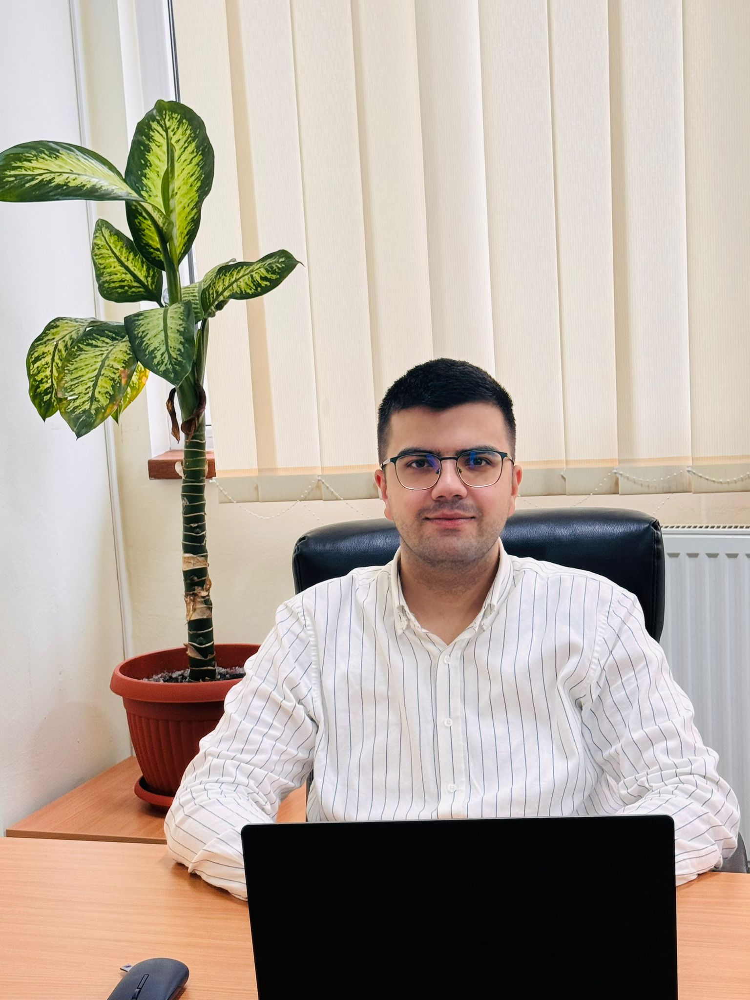

Daniel Rus - Cabinet de Psihologie
ACASĂ
SERVICII
DESPRE
MATERIALE GRATUITE
CONTACT
Contact
Adresă: str. Păcii, nr. 3, ap. 12, Zalău, Sălaj
Telefon: +40 741 144 218
Email: rusdaniel.cabinetdepsihologie@gmail.com
Program: Luni - Vineri, 16:00 - 20:00 | Sâmbătă, 09:00 - 14:00
Recenzii
‹
›
